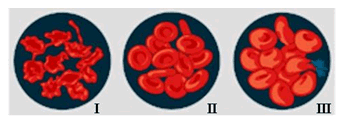

As imagens abaixo representam o comportamento das hemácias em soluções de diferentes concentrações.

- No esquema I, a solução é hipotônica, ou seja: tem menor concentração de solutos.
- No esquema II, a solução é isotônica, ou seja: as concentrações do meio interno e externo são similares.
- No esquema III, a solução é hipertônica, ou seja: tem maior concentração de solutos.
O caso exposto representa:
a) transporte passivo.
b) osmose.
c) difusão facilitada.
d) transporte ativo.